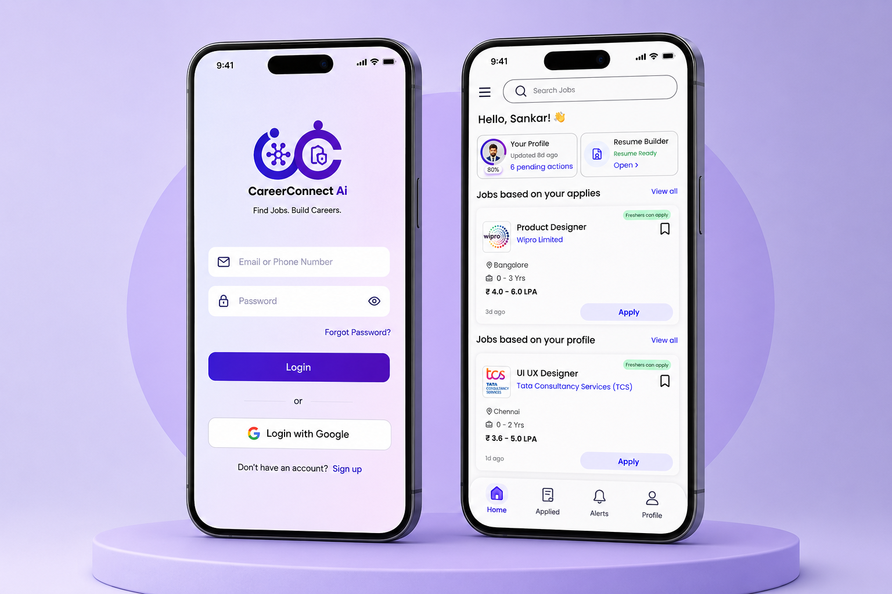

An AI-powered job platform designed to improve job discovery and application tracking through structured user flows and intuitive navigation.

CareerConnect AI is a modern recruitment platform that helps job seekers discover opportunities, manage applications, and track their job search journey with ease. The design prioritizes clarity, reduced friction, and personalized matching.
Traditional job portals overwhelm users with irrelevant listings and complex application flows. Job seekers struggle with fragmented experiences across resume building, discovery, and tracking.
From research to validated interface
User interviews & pain point research
Problem framing & user goals
Flows, concepts & prioritization
Wireframes to high-fidelity UI
Usability feedback & iteration